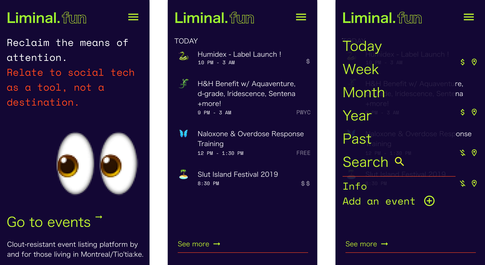

a cooperatively owned events website
As a peer-to-peer network, all data on Subliminal.fun is cooperatively owned by its users. Co-designed through workshops with folks whose lineages have been historically oppressed and repressed, the design process creates space to collectively hold the somatic experiences of data injustice and build digital systems that prioritize wellbeing over profit.
By supporting people and collectives to find, organize, promote, and communicate safely about digital and physical events within their communities, Subliminal.fun implements digital autonomy, privacy, and co-designed social infrastructure. It is conceived of as a node in a growing network of ethical social media platforms that catalyze public data literacy, autonomy, and democratic engagement. Legible documentation and reflections of the co-design and development process would provide a modular toolkit for other initiatives to freely use.